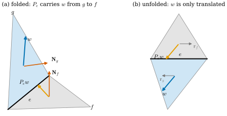
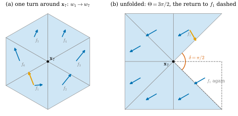
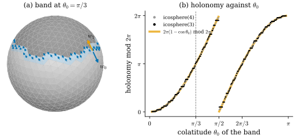

45.3 Discrete Connections and Parallel Transport
Goals
- face마다 각 하나로 tangent vector를 기록하고, 이웃한 face 사이의 discrete Levi-Civita transport(펼쳐서 옮기기)를 각의 덧셈 \(\psi \mapsto \psi + \rho_e\)로 계산할 수 있다.
- discrete connection을 dual 1-form으로 정의하고, dual cycle을 따른 holonomy가 dual chain과의 pairing임을 설명할 수 있다.
- discrete Levi-Civita connection의 dual cell 둘레 holonomy가 angle defect \(\delta_i\)와 같음을 증명하고, cube의 corner와 icosphere의 위도 띠에서 확인할 수 있다.
- discrete connection의 curvature를 정의하고, 어떤 connection에서든 그 합이 \(2\pi\chi\)임을 증명할 수 있다.
Prerequisites
- Remark 44.5.1 (curve를 따른 covariant derivative \(D_t\)), Proposition 44.5.2 (metric compatibility), Tour Definition 0.5.6와 Example 0.5.7 (위도원의 holonomy)
- (44.3.4) (edge를 건너 펼치는 규칙), Theorem 44.3.9
- Definition 40.1.1 (angle defect), Theorem 40.2.1, Corollary 40.2.9 (discrete Gauss–Bonnet)
- Remark 36.5.1 (dual orientation), Proposition 36.5.5, Proposition 45.2.8 (dual cycle)
- Lemma 38.6.7 (공유 edge는 두 normal의 cross product에 평행), Definition 43.3.1 (\(J\))
Motivation
Section 45.1–45.2는 vector field를 potential과 harmonic basis의 계수로 기술했다. 이 절부터는 다른 기술을 쓴다. 한 점에서 vector 하나를 주고 그것을 곡면 전체로 “같은 방향을 유지하며” 옮기면 field가 하나 생긴다. 그러면 field 대신 옮기는 규칙을 정하면 된다. 문제는 휘어진 곡면에서 “같은 방향”이 저절로 정해지지 않는다는 것이다. 평면에서는 모든 점의 vector가 한 평면에 있어 바로 비교할 수 있지만, 곡면에서는 점마다 tangent plane이 달라 두 점의 vector를 비교할 공통의 기준이 없다. 그래서 이웃한 tangent plane을 잇는 규칙을 정해야 한다. 그 규칙이 connection이고, 규칙을 따라 한 바퀴 돌았을 때 vector가 처음과 달라지는 정도가 holonomy다. Chapter 44의 straightest geodesic은 이미 edge를 건널 때 두 face를 펼쳐 방향을 잇는 규칙을 썼다((44.3.4)). 이 절은 그 규칙을 곡선 하나가 아니라 mesh 전체의 connection으로 만든다.
Parallel Transport on a Smooth Surface
곡면 \(S\) 위의 곡선 \(\gamma\)를 따라가는 tangent vector field \(V\)가 \(D_tV = 0\)(Remark 44.5.1)을 만족하면 \(V\)가 parallel transport(평행이동)된다고 한다(정본은 Section 9.4, Section 22.3, Tour Section 0.5). \(D_t\)가 metric과 compatible하므로(Proposition 44.5.2) parallel transport는 길이와 각을 보존한다(Exercise 44.5.5). 2차원에서 길이를 보존하는 linear map은 회전 아니면 반사이고, 연속적으로 움직이므로 회전이다. 그래서 transport는 각 하나로 기술된다. closed curve를 한 바퀴 돈 뒤 vector가 돈 각을 holonomy(홀로노미)라 한다(Tour Definition 0.5.6, Track 3은 Section 22.3).
Remark 45.3.1 (holonomy and other connections on a surface). (a) disk 모양의 영역 \(D \subseteq S\)의 boundary를 \(D\)가 왼쪽에 있게(바깥쪽 \(\mathbf{N}\)에서 보아 반시계 방향으로) 한 바퀴 돌면, holonomy는 반시계 방향으로 \(\int_DK\,dA\) (mod \(2\pi\))이다. unit sphere의 colatitude \(\theta_0\)인 circle of latitude에서는 \(2\pi(1 - \cos\theta_0)\)이다(Example 0.5.7). 이것은 Gauss–Bonnet theorem의 한 형태이고 진술만 한다(Tour Theorem 0.5.8의 Proof idea, Track 3 Section 10.1). (b) “같은 방향”의 규칙은 Levi-Civita의 \(D_t\)만 있는 것이 아니다. 1-form \(\xi\)를 하나 골라, vector가 \(D_t\)의 parallel transport에 비해 시간 \(dt\) 동안 \(\xi(\gamma')\,dt\)만큼 더 반시계 방향으로 돌게 하는 규칙(공식으로는 \(\nabla^\xi_XV = \nabla_XV - \xi(X)\,JV\)가 \(0\)인 field를 parallel이라 한다)도 길이를 보존하는 transport다. 이런 규칙이 connection(접속)의 예다(일반론은 Section 22.1). 그 holonomy는 (a)의 각에 \(\oint_{\partial D}\xi\)가 더해진 \(\int_DK\,dA + \oint_{\partial D}\xi\) (mod \(2\pi\))이다. 이 장의 discrete connection은 이 (b)의 discrete 판이다.
Remark 45.3.1(b)의 각 덧셈은 2차원에서만 가능하다. 평면의 회전은 서로 교환되므로 경로를 따라 회전각을 더하기만 하면 되기 때문이다. 고차원에서는 holonomy가 각 하나가 아니라 회전 행렬이고 순서가 중요하다(Leads to의 Open question).
Vectors on Faces and the Discrete Levi-Civita Connection
mesh에서는 tangent vector를 face 위에 둔다. face는 평평하므로 그 평면이 tangent plane이고, 그 평면은 vertex 위치만으로 정해진다. 이 장의 규약(Section 45.1의 Conventions 상자)대로 face \(f\)에 기준 방향 \(\mathbf{r}_f = (\mathbf{x}_{F[f,1]} - \mathbf{x}_{F[f,0]})/\abs{\cdot}\)(face 배열의 첫 edge의 방향)을 두고, 단위 vector를 \(\mathbf{r}_f\)에서 \(\mathbf{N}_f\) 둘레로 반시계 방향으로 잰 각 \(\psi_f\)로 쓴다: \(X_f = \cos\psi_f\,\mathbf{r}_f + \sin\psi_f\,\mathbf{N}_f\times\mathbf{r}_f\). \((\mathbf{r}_f, \mathbf{N}_f\times\mathbf{r}_f, \mathbf{N}_f)\)는 right-handed다(dgmesh.face_frames와 같다). 이렇게 하면 크기를 버리고 방향만 남으므로, 정확히는 direction field(방향장)를 다루는 것이다 [Cr §8.3]. edge \(e = [i, j]\)(\(i \lt j\))를 공유하는 두 face 가운데 halfedge \(i \to j\)를 가진 쪽을 \(f\)(왼쪽), \(j \to i\)를 가진 쪽을 \(g\)(오른쪽)라 하면, dual edge \(e^\star\)는 \(g\)에서 \(f\)로 간다(Remark 36.5.1).
Definition 45.3.2 (discrete Levi-Civita connection). boundary가 없는 oriented mesh의 edge \(e\)와 그 두 face \(g\)(오른쪽), \(f\)(왼쪽), 단위 edge vector \(\hat e\)에 대하여 \(g\)의 평면에서 \(f\)의 평면으로 가는 linear map \[ P_e(w) = \inner{w}{\hat e}\,\hat e + \inner{w}{\mathbf{N}_g\times\hat e}\,\mathbf{N}_f\times\hat e \] 을 \(e^\star\)를 따른 transport라 하고, 반대 방향의 transport를 \(P_e^{-1}\)로 둔다. 모든 dual edge의 이 transport의 모임을 discrete Levi-Civita connection(이산 레비치비타 접속)이라 한다. 각으로 쓰면 \(P_e\)는 \(\psi \mapsto \psi + \rho_e\)이다. 여기서 \(\rho_e \in (-\pi, \pi]\)는 \(P_e(\mathbf{r}_g)\)를 \(\mathbf{r}_f\)에서 반시계 방향으로 잰 각이다.
\(P_e\)는 (44.3.4)와 같은 식이다(그곳은 \(f\)에서 \(g\)로 옮겼다). 두 face를 공유 edge 둘레로 펼쳐 한 평면에 놓고, vector를 그 평면 안에서 평행하게 옮긴 뒤, 다시 접는 것이다(Figure 45.3.1). Crane의 노트는 이것을 펼치고, 옮기고, 접는 세 단계로 설명하고 거기에 각 \(\varphi_{ij}\)만큼의 회전을 더해 일반 connection을 만든다 [Cr §8.3.2]. 이 장은 그 각을 \(\xi\)로 쓴다(Definition 45.3.8).
Proposition 45.3.3 (properties of the edge transport). (a) \(P_e\)는 \(g\)의 평면에서 \(f\)의 평면으로 가는 orientation을 보존하는 isometry이고, \(P_e(\hat e) = \hat e\), \(P_e(\mathbf{N}_g\times\hat e) = \mathbf{N}_f\times\hat e\)이다. (b) \(g\)에서 각이 \(\psi\)인 단위 vector는 \(f\)에서 각이 \(\psi + \rho_e\)인 vector로 간다. 반대 방향은 \(\psi \mapsto \psi - \rho_e\)이다. (c) \(\rho_e\)는 두 triangle의 edge length만으로 정해진다(intrinsic).
Proof. (a) \((\hat e, \mathbf{N}_g\times\hat e)\)는 \(g\)의 평면의 orthonormal basis이고 \((\hat e, \mathbf{N}_f\times\hat e)\)는 \(f\)의 평면의 것이며, \(P_e\)는 앞의 basis를 뒤의 basis로 보낸다. 따라서 isometry다. 두 basis는 모두 \(\det[\,\cdot\,, \cdot\,, \mathbf{N}] \gt 0\)이므로(\(\hat e\times(\mathbf{N}\times\hat e) = \mathbf{N}\)) orientation도 보존한다. (b) orientation을 보존하는 isometry는 평면 사이에서 각을 보존한다. \(w\)가 \(\mathbf{r}_g\)에서 각 \(\psi\)이면 \(P_e(w)\)는 \(P_e(\mathbf{r}_g)\)에서 각 \(\psi\)이고, \(P_e(\mathbf{r}_g)\)는 \(\mathbf{r}_f\)에서 \(\rho_e\)이므로 \(P_e(w)\)는 \(\mathbf{r}_f\)에서 \(\psi + \rho_e\)이다. (c) \(\rho_e\)는 \(\mathbf{r}_g\)가 \(\hat e\)와 이루는 각과 \(\mathbf{r}_f\)가 \(\hat e\)와 이루는 각의 차이고, 둘 다 triangle 안의 각이므로 law of cosines로 edge length에서 정해진다(Proposition 38.6.1과 같은 이유).

Figure 45.3.1의 (b)부터 보자. 펼친 평면에서는 \(w\)를 그대로 평행하게 옮겨 \(f\)로 가져가면 된다(파랑과 주황이 같은 방향이다). (a)로 돌아가 접으면, 주황 화살표는 \(f\)의 평면 안에 누워 있고 파랑은 \(g\)의 평면 안에 있다. 둘은 \(\R^3\)의 vector로는 다르지만, edge와 이루는 각이 같고 edge의 같은 쪽을 향한다. 이 “edge와의 각을 유지한다”는 것이 (44.3.4)의 뜻이다.
Example 45.3.4 (planar meshes and the hinge).
(a) 평면 mesh(dgmesh.grid_mesh, 모든 \(\mathbf{N}_f = e_3\))에서는 \(\mathbf{N}_g\times\hat e = \mathbf{N}_f\times\hat e\)이므로 \(P_e\)는 identity다. \(\rho_e\)는 두 기준 방향의 각의 차, 곧 \(\operatorname{angle}(\mathbf{r}_g) - \operatorname{angle}(\mathbf{r}_f)\)일 뿐이다. (b) Figure 45.3.1의 hinge를 \(\lambda = 0^\circ, 70^\circ, 120^\circ\)로 접어도 \(\rho_e = 180^\circ\)는 그대로다. Proposition 45.3.3(c)대로 접는 각과 무관하다. 반면 \(\R^3\)에서 본 \(P_ew\)는 \(\lambda\)에 따라 바뀐다.
Verification: verify/v-45-3-discrete-connections.py
Non-example 45.3.5 (projecting onto the next face). \(g\)의 vector를 \(f\)의 평면으로 orthogonal projection해서 옮기는 규칙 \(w \mapsto w - \inner{w}{\mathbf{N}_f}\mathbf{N}_f\)는 transport가 아니다. \(\hat e\) 성분은 그대로이지만 \(\mathbf{N}_g\times\hat e\) 성분은 \(\cos\theta_e\)배가 된다(\(\theta_e\)는 bending angle, Definition 39.5.5). 그래서 길이가 줄고, unit cube의 edge(\(\theta_e = 90^\circ\))에서는 edge에 수직인 vector가 \(0\)이 된다. 거꾸로 옮기면 처음으로 돌아오지도 않는다. 길이를 보존한다는 조건(Remark 45.3.1의 metric compatibility)이 transport의 정의에 필요한 이유다.
Verification: verify/v-45-3-discrete-connections.py
펼치기를 다른 눈으로 볼 수도 있다. edge를 건너면 normal이 \(\mathbf{N}_g\)에서 \(\mathbf{N}_f\)로 바뀐다. 곧 discrete Gauss map(Section 38.5)의 image가 unit sphere 위에서 \(\mathbf{N}_g\)에서 \(\mathbf{N}_f\)로 움직인다.
Proposition 45.3.6 (unfolding follows the Gauss image). \(\mathbf{N}_f \ne \pm\mathbf{N}_g\)라 하고, \(\hat e\)를 \(i \to j\) 방향, \(\theta_e\)를 bending angle(Definition 39.5.5, \(\mathbf{N}_g = R(\hat e, \theta_e)\mathbf{N}_f\))이라 하자. \(\hat e\) 둘레로 \(-\theta_e\)만큼 도는 회전 \(R := R(\hat e, -\theta_e)\)는 \(\mathbf{N}_g\)를 \(\mathbf{N}_f\)로 보내고, \(P_e = R|_{\text{plane}(g)}\)이다. 또 unit sphere에서 \(\mathbf{N}_g\)에서 \(\mathbf{N}_f\)로 가는 짧은 great circle arc를 따른 parallel transport는 \(T_{\mathbf{N}_g}S^2\)를 \(T_{\mathbf{N}_f}S^2\)로 보내는 같은 \(R\)의 restriction이다. \(T_{\mathbf{N}}S^2\)는 normal이 \(\mathbf{N}\)인 평면이므로 face의 평면과 같은 방향의 평면이다. 곧 discrete Levi-Civita transport는 Gauss image가 sphere 위에서 움직인 대로 sphere의 Levi-Civita transport를 당겨 온 것이다.
Proof. Lemma 38.6.7에서 \(\hat e\)는 \(\mathbf{N}_f\times\mathbf{N}_g\)에 평행하므로 \(\mathbf{N}_f\), \(\mathbf{N}_g\)는 \(\hat e\)에 수직이고, Definition 39.5.5에서 \(R\mathbf{N}_g = R(\hat e, -\theta_e)R(\hat e, \theta_e)\mathbf{N}_f = \mathbf{N}_f\)이다. \(R\)은 \(\hat e\)를 고정하고, 회전은 cross product를 보존하므로 \(R(\mathbf{N}_g\times\hat e) = R\mathbf{N}_g\times R\hat e = \mathbf{N}_f\times\hat e\)이다. 따라서 \(R\)은 Proposition 45.3.3(a)의 두 basis 사이에서 \(P_e\)와 같다. sphere 쪽(Proof sketch): \(\mathbf{N}_g\)와 \(\mathbf{N}_f\)를 지나는 great circle은 normal이 \(\hat e\)인 평면에 놓이고, sphere의 geodesic이다(Example 44.1.2). \(\hat e\) 둘레의 회전 \(R_t\)는 sphere의 isometry이고 그 great circle을 자기 자신으로 보내면서 속도 vector를 보존한다. isometry는 parallel transport를 parallel transport로 보내고, geodesic의 속도는 parallel이며, 2차원 tangent plane에서 parallel field는 속도와의 각을 유지한다(Exercise 44.5.5). 따라서 arc를 따른 parallel transport는 \(R_t\)의 미분, 곧 \(R\)이다.
Remark 45.3.7 (Kobayashi's theorem). smooth 곡면에서도 같은 일이 일어난다. Crane의 노트는 Kobayashi의 정리로 이렇게 소개한다: 곡면의 Levi-Civita connection은 Gauss map으로 sphere의 Levi-Civita connection을 당겨 온 것이다 [Cr §8.3.3]. 곧 곡면 위의 parallel transport는, 곡선의 Gauss image가 sphere 위를 지나는 동안 sphere의 parallel transport로 그 tangent plane(normal이 같으므로 같은 평면이다)을 옮긴 것과 같다. 이 study set은 그 정리를 진술만 한다. Crane의 노트는 이 정리로 펼치기 규칙을 정당화하는 일을 연습으로 남기고, Proposition 45.3.6은 그것을 한 edge짜리 discrete 판으로 증명한 것이다.
Discrete Connections and Holonomy
discrete Levi-Civita connection은 dual edge마다 각 \(\rho_e\)를 준다. 그런데 \(\rho_e\) 자체는 기준 방향 \(\mathbf{r}_f\)의 선택에 따라 바뀌는 양이다(Example 45.3.4(a)). 기하적인 내용은 Levi-Civita에 비해 “얼마나 더 돌리는가”에 있다. 그래서 discrete connection을 그 차이로 정의한다. Crane도 discrete connection이 Levi-Civita로부터의 편차를 기록한다고 적는다 [Cr §8.3.3].
Definition 45.3.8 (discrete connection). boundary가 없는 oriented mesh 위의 dual 1-form \(\xi \in \R^{n_1}\)(Definition 36.5.2, dual edge \(e^\star\)마다 수 하나, 방향을 뒤집으면 부호가 바뀐다)을 discrete connection(이산 접속)이라 한다. 그 transport는 \(e^\star\)를 그 방향(\(g \to f\))으로 건널 때 \(\psi \mapsto \psi + \rho_e + \xi_e\), 반대로 건널 때 \(\psi \mapsto \psi - \rho_e - \xi_e\)이다. \(\xi = 0\)이 discrete Levi-Civita connection이다. \(\xi_e\)를 connection angle(접속각)이라 부른다.
예: 평면 grid에서 dual edge마다 \(\xi_e = 0.1\)(dual orientation 방향으로)을 주면, 건널 때마다 \(0.1\)씩 더 돈다. 비예: dual edge의 두 방향에 서로 무관한 두 각 \(a_e\)(\(g\to f\)), \(b_e\)(\(f\to g\))를 주는 규칙은 \(a_e + b_e \ne 0\)일 때 갔다가 돌아오면 vector가 \(a_e + b_e\)만큼 돌아 있다. 같은 dual edge를 왕복하는 것만으로 holonomy가 생기므로 “같은 방향”의 규칙이 될 수 없다. dual 1-form이라는 조건(방향을 뒤집으면 부호가 바뀐다)이 이것을 막는다 [Cr §8.3.2].
dual edge를 이어 face \(f_0, f_1, \dots, f_m\)을 차례로 지나는 dual path를 따라가면, 2차원의 회전각은 더해지기만 하므로(Remark 45.3.1 뒤) 각이 \(\sum_k s_k(\rho_{e_k} + \xi_{e_k})\)만큼 늘어난다(\(s_k = \pm1\)은 \(k\)번째 건넘이 dual orientation을 따르는지). 이 합은 dual 1-chain \(c^\star = \sum_ks_ke_k^\star\)과 dual 1-cochain \(\rho + \xi\)의 pairing \(c^{\star\mathsf T}(\rho + \xi)\)이다(Proposition 36.2.13을 dual complex에 쓴 것).
Proposition 45.3.9 (holonomy along dual cycles). closed dual path(\(f_m = f_0\))를 따라 discrete connection \(\xi\)로 vector를 한 바퀴 옮기면, 처음 vector에서 반시계 방향으로 \[ \operatorname{hol}_\xi(c^\star) := c^{\star\mathsf T}(\rho + \xi) \pmod{2\pi} \] 만큼 돈다. 여기서 \(c^\star\)는 그 path의 dual 1-cycle이다(Proposition 45.2.8: \(d_1c^\star = 0\)). 이 값은 path의 출발 face와 각 face의 기준 방향 \(\mathbf{r}_f\)의 선택에 무관하고, \(c^\star\)에 대해 linear이다.
Proof. 처음 face \(f_0\)에서 각 \(\psi_0\)인 vector는 Definition 45.3.8의 규칙을 \(m\)번 쓰면 \(f_m = f_0\)에서 각 \(\psi_0 + c^{\star\mathsf T}(\rho + \xi)\)인 vector가 되므로 holonomy는 그 차이다. 기준 방향을 \(\mathbf{r}_f\)에서 각 \(t_f\)만큼 돌린 것으로 바꾸면 face \(f\)의 각이 \(t_f\)만큼 줄고, dual edge \(g \to f\)의 \(\rho_e\)는 \(t_g - t_f\)만큼 바뀐다. 곧 \(\rho\)가 \(-d_1^{\mathsf T}t = -\tilde d_0t\)만큼 바뀌고, \(c^{\star\mathsf T}\tilde d_0t = (d_1c^\star)^{\mathsf T}t = 0\)이므로 holonomy는 그대로다. 출발 face를 바꾸는 것은 같은 cycle의 순서를 돌리는 것이라 합이 같다. linearity는 pairing이 linear이기 때문이다.
Proposition 45.3.9의 중요한 점은 holonomy가 “각을 더해 가는 과정”에서 dual chain과 dual cochain의 pairing이라는 linear algebra의 대상이 되었다는 것이다. 그러면 Stokes's theorem이 쓰인다. 가장 작은 dual cycle, 곧 vertex 하나의 dual cell \(i^\star\)의 boundary부터 보자. 그 boundary는 \(i\) 둘레의 face를 반시계 방향으로 한 바퀴 돌고, dual chain으로 \(-d_0e_i\)이다(Proposition 45.2.8 뒤). 따라서 그 둘레의 holonomy는 \(-(d_0^{\mathsf T}(\rho + \xi))_i = (\tilde d_1(\rho + \xi))_i\)이다(\(\tilde d_1 = -d_0^{\mathsf T}\), Proposition 36.5.5).
Theorem 45.3.10 (the holonomy of the discrete Levi-Civita connection is the angle defect). boundary가 없는 oriented mesh의 vertex \(i\)에서, discrete Levi-Civita connection으로 dual cell \(i^\star\)의 boundary를 반시계 방향으로 한 바퀴 돈 holonomy는 angle defect다: \[ \operatorname{hol}_0(\partial i^\star) = -(d_0^{\mathsf T}\rho)_i \equiv \delta_i = 2\pi - \Theta_i \pmod{2\pi}. \]
이 정리가 말하는 것. vertex 둘레를 한 바퀴 돌며 펼쳐 옮기면 vector는 그 vertex에 몰린 Gaussian curvature만큼 돈다. angle defect가 discrete Gaussian curvature(Definition 40.1.1)인 또 하나의 이유다. Crane의 노트에는 연습으로 있다 [Cr §8.3.6].
Proof idea: vector가 edge와 이루는 각을 따라가면, edge를 건널 때는 그 각이 바뀌지 않고, face 안에서 다음 edge로 기준을 바꿀 때마다 corner angle만큼 줄어든다. 한 바퀴 돌면 \(\Theta_i\)만큼 줄어 있다.
Proof. link vertex를 orientation 순서로 \(j_1, \dots, j_m\)이라 하고 face \(f_k = (i, j_k, j_{k+1})\)(\(j_{m+1} = j_1\))의 \(i\)에서의 corner angle을 \(\theta_k\)라 하자. \(u_k\)를 \(\mathbf{x}_i\)에서 \(\mathbf{x}_{j_k}\)로 가는 단위 vector라 하면 \(u_k\)와 \(u_{k+1}\)은 \(f_k\)의 평면에 있고, \(f_k\)가 \(\mathbf{N}_{f_k}\)에 대해 반시계 방향이므로 \(u_{k+1}\)은 \(u_k\)를 \(\mathbf{N}_{f_k}\) 둘레로 \(\theta_k\)만큼 반시계 방향으로 돌린 것이다. \(f_{k-1}\)에서 \(f_k\)로 건너는 edge는 \(\{i, j_k\}\)이고, \(P\)는 그 edge 방향 \(u_k\)를 고정하는 orientation 보존 isometry다(Proposition 45.3.3(a)). 그러므로 \(f_{k-1}\)에서 \(u_k\)와 반시계 방향 각 \(\phi\)를 이루는 vector는 건넌 뒤 \(f_k\)에서 \(u_k\)와 각 \(\phi\)를 이루고, 따라서 \(u_{k+1}\)과는 \(\phi - \theta_k\)를 이룬다. \(f_m\)(\(= f_0\))에서 \(u_1\)과 각 \(\phi\)였던 vector를 \(f_1, f_2, \dots, f_m\)까지 한 바퀴 옮기면, \(f_m\)에서 \(u_{m+1} = u_1\)과 이루는 각은 \(\phi - \sum_k\theta_k = \phi - \Theta_i\)이다. 곧 vector는 반시계 방향으로 \(-\Theta_i \equiv 2\pi - \Theta_i = \delta_i\)만큼 돌았다. face의 순서 \(f_{k-1} \to f_k\)는 \(i^\star\)의 boundary를 face의 방향(반시계)으로 도는 것이므로, Proposition 45.3.9에서 이 각은 \(-(d_0^{\mathsf T}\rho)_i\)이다.
Example 45.3.11 (a cube corner, the octahedron, a planar grid).
(a) ch45.unit_cube()(정사각형마다 대각선 하나)의 corner \(\mathbf{x}_0 = (0, 0, 0)\)과 \(\mathbf{x}_7 = (1, 1, 1)\)에는 대각선 셋이 모여 \(45^\circ\)짜리 triangle 여섯이 있고 \(\Theta = \tfrac{3\pi}{2}\)이다. vector를 한 바퀴 옮기면 반시계 방향으로 \(\tfrac\pi2\)만큼 돈다(Figure 45.3.2). 나머지 여섯 corner에는 대각선이 하나씩 지나 triangle 넷(\(45^\circ, 45^\circ, 90^\circ, 90^\circ\))이 모이고, 역시 \(\Theta = \tfrac{3\pi}{2}\)라 holonomy가 같다(Example 40.1.2(b)). (b) 정팔면체의 vertex는 \(\delta = \tfrac{2\pi}{3}\)이므로 holonomy가 \(120^\circ\)다. (c) 평면 grid의 interior vertex는 \(\Theta = 2\pi\)라 holonomy가 \(0\)이다. 평면에서는 \(P_e\)가 identity이므로 당연하다(Example 45.3.4(a)).
Verification: verify/v-45-3-discrete-connections.py

ch45.unit_cube()의 corner \(\mathbf{x}_7 = (1, 1, 1)\)에 모이는 triangle \(f_1, \dots, f_6\)(바깥에서 보아 반시계 방향 순서, corner angle 모두 \(45^\circ\))과, \(f_1\)에서 \(\mathbf{r}_{f_1}\)과 \(30^\circ\)를 이루는 단위 vector \(w_1\)을 \(\psi \mapsto \psi \pm \rho_e\)로 \(f_2, \dots, f_6\), 다시 \(f_1\)로 옮긴 것. 읽는 법: (a) \((1, 1, 1)\) 방향에서 본 cube(하늘색이 그 여섯 triangle)이고, 파란 화살표가 각 face에 도착한 vector(무게중심에서, 길이 \(0.28\)), 주황 화살표가 한 바퀴 돌아 \(f_1\)에 온 \(w_7\)이다. (b) 여섯 triangle을 \(\mathbf{x}_7\) 둘레로 평면에 펼친 것(실제 edge length)이다. 점선 triangle은 한 바퀴 돌아 다시 만나는 \(f_1\)이고, 주홍 호가 펼친 부채꼴이 채우지 못한 각이다. 펼친 평면에서는 transport가 평행하게 옮기는 것(translation)이므로 파란 화살표가 모두 같은 vector이고, 주황은 그 vector를 처음의 \(f_1\)로 되돌려 그린 것이다. 볼 것: (a)에서 주황 \(w_7\)은 파란 \(w_1\)을 반시계 방향으로 \(90^\circ\) 돌린 것이다. (b)에서 corner angle의 합은 \(\Theta = 270^\circ\)이고 남는 틈이 \(\delta = 90^\circ\)다. 다시 만난 \(f_1\)(점선)은 처음의 \(f_1\)을 \(270^\circ\) 돌린 자리에 있으므로, 같은 vector가 그 face의 기준 방향에 대해서는 \(-270^\circ \equiv 90^\circ\)만큼 돌아 보인다. 본문과의 연결: Theorem 45.3.10, Example 45.3.11. 같은 corner를 straightest geodesic의 관점에서 펼친 그림이 Figure 44.3.1이다.Figure 45.3.2의 (b)에서 Theorem 45.3.10의 증명을 그대로 읽을 수 있다. 파란 화살표는 펼친 평면에서 한 번도 돌지 않는다. 그런데 부채꼴의 마지막 triangle 다음에 만나는 것은 원래의 \(f_1\)이 아니라 \(270^\circ\) 돌아간 자리의 \(f_1\)이다. vector가 돈 것이 아니라 기준이 \(\Theta\)만큼 돈 것이고, 그 차이 \(2\pi - \Theta\)가 holonomy다. (a)에서는 그 결과만 보인다. 같은 face 안의 파랑과 주황이 직각을 이룬다.
vertex 하나에서 영역으로 가자. 여러 dual cell의 합의 boundary는 각 dual cell의 boundary의 합이다. 이웃한 두 dual cell이 공유하는 dual edge는 반대 방향으로 두 번 나와 지워진다.
Corollary 45.3.12 (holonomy around a region). vertex의 모임 \(\mathcal{S}\)에 대해 dual cycle \(c^\star_{\mathcal{S}} := \partial\big(\sum_{i\in\mathcal{S}}i^\star\big) = -d_0\mathbf{1}_{\mathcal{S}}\)(\(\mathcal{S}\)를 왼쪽에 두고 돈다)의 Levi-Civita holonomy는 \[ \operatorname{hol}_0(c^\star_{\mathcal{S}}) \equiv \sum_{i\in\mathcal{S}}\delta_i \pmod{2\pi} \] 이다. 일반 connection \(\xi\)에서는 \(\sum_{i\in\mathcal{S}}\big(\delta_i - (d_0^{\mathsf T}\xi)_i\big)\)이다.
Proof. Proposition 45.3.9의 linearity로 \(\operatorname{hol}(c^\star_{\mathcal S}) = (-d_0\mathbf{1}_{\mathcal S})^{\mathsf T}(\rho + \xi)\) \(= \sum_{i\in\mathcal{S}}\big(-d_0^{\mathsf T}(\rho + \xi)\big)_i\)이고, Theorem 45.3.10을 각 항에 쓰면 된다. dual boundary가 \(-d_0\)인 것은 Proposition 45.2.8이다.
이것은 smooth의 “holonomy = 둘러싼 curvature”(Remark 45.3.1(a))의 정확한 discrete 판이다. 같은 양을 primal 쪽에서 본 것이 discrete local Gauss–Bonnet(Corollary 40.2.9)과, 곡선 위의 vertex를 절반만 세는 Theorem 44.3.9이다. dual cycle은 vertex를 지나지 않으므로 여기서는 절반을 셀 일이 없다.
Example 45.3.13 (a latitude band on the icosphere). icosphere(3)에서 colatitude가 \(\theta_0\)보다 작은 vertex를 \(\mathcal{S}\)로 두면 \(c^\star_{\mathcal{S}}\)는 위도 \(\theta_0\) 근처의 face 띠를 경도가 늘어나는 쪽으로 한 바퀴 돈다. \(\theta_0 = \tfrac\pi3\)이면 띠의 face는 82개이고, 옮긴 vector는 \(3.1594\)만큼 돌아 온다. smooth 값은 \(2\pi(1 - \cos\tfrac\pi3) = \pi = 3.1416\)이다(Example 0.5.7). discrete 값은 \(\mathcal{S}\)의 angle defect의 합과 \(10^{-10}\) 안에서 같다(Corollary 45.3.12). smooth 값과의 차이는 \(\mathcal{S}\)의 dual cell을 모은 영역이 극관과 정확히 같지 않기 때문이다. \(\theta_0\)를 \(0\)에서 \(\pi\)까지 움직이면 discrete holonomy는 vertex가 \(\mathcal{S}\)에 들어올 때마다 계단처럼 오르며 \(2\pi(1 - \cos\theta_0)\)을 따라가고, icosphere(4)에서는 계단이 더 잘다(Figure 45.3.3).
Verification: verify/v-45-3-discrete-connections.py

dgmesh.icosphere(3)(unit sphere, vertex 642개)에서 colatitude가 \(\theta_0\)보다 작은 vertex의 모임 \(\mathcal{S}\)와 dual cycle \(c^\star_{\mathcal S} = -d_0\mathbf{1}_{\mathcal S}\)(Corollary 45.3.12). 읽는 법: (a) \(\theta_0 = \tfrac\pi3\). 진한 회색은 세 vertex가 모두 \(\mathcal S\)에 있는 face, 하늘색은 띠(\(c^\star_{\mathcal S}\)가 지나는 face 82개)다. 경도 \(0\)의 띠 face에서 남쪽을 향하는 vector \(w_0\)(굵은 파랑)을 띠를 따라 경도가 늘어나는 쪽으로 옮겼다. 작은 파란 화살표가 앞쪽 띠 face에 도착한 vector(길이 \(0.12\)), 굵은 주황 \(w_1\)이 한 바퀴 돌아온 vector다. (b) 가로축은 \(\theta_0\), 세로축은 holonomy를 \([0, 2\pi)\)로 접은 값이다. 검은 점이 icosphere(3), 회색 점이 icosphere(4)(\(\theta_0\) 400개), 넓은 주황 선이 smooth 값 \(2\pi(1 - \cos\theta_0)\) mod \(2\pi\)이고, 회색 점선이 \(\theta_0 = \tfrac\pi3\)이다. 볼 것: (a)에서 \(w_1\)은 \(w_0\)과 거의 반대 방향이다(\(3.1594\), \(\pi\)에서 \(1^\circ\) 남짓). (b)의 점들은 계단을 이루며 주황 선 위에 놓이고, \(\theta_0 = \tfrac\pi2\)에서 \(2\pi\)를 넘어 \(0\)으로 돌아간다. 모든 점에서 holonomy는 \(\mathcal S\)의 \(\delta_i\)의 합과 정확히 같다. 본문과의 연결: Corollary 45.3.12, Example 45.3.13, §7의 parallel transport 검증 예. (a)의 interactive version이 있다.Figure 45.3.3의 (a)를 위에서 내려다본다고 생각하자. 띠를 반시계 방향으로 돌면 북쪽의 진한 회색 영역이 늘 왼쪽에 있다. vector는 띠의 face를 하나씩 건널 때마다 조금씩 방향이 바뀌어, 한 바퀴 뒤에는 남쪽 대신 북쪽을 향한다. (b)에서는 \(\theta_0\)가 작을 때 holonomy가 \(0\) 근처에서 출발해 \(\theta_0 = \tfrac\pi3\)에서 \(\pi\)를 지난다. 이것이 (a)의 반대 방향이다. 계단 하나의 높이는 그때 \(\mathcal S\)에 새로 들어온 vertex의 \(\delta_i\)(icosphere(3)에서 \(0.02\) 안팎)다.
holonomy는 \(2\pi\)를 법으로 하는 각이다. 그러나 dual cell 둘레에서는 실수 값을 하나 고를 자연스러운 방법이 있다. Levi-Civita의 몫은 실수 \(\delta_i\)로 정해져 있고(Theorem 45.3.10), \(\xi\)의 몫은 실수의 합 \(-(d_0^{\mathsf T}\xi)_i\)이기 때문이다.
Definition 45.3.14 (curvature of a discrete connection). boundary가 없는 oriented mesh 위의 discrete connection \(\xi\)와 vertex \(i\)에 대하여 실수 \[ \kappa^\xi_i := \delta_i - (d_0^{\mathsf T}\xi)_i = \delta_i + (\tilde d_1\xi)_i \] 를 \(i\)에서 \(\xi\)의 curvature of a discrete connection(이산 접속의 곡률)이라 한다. Theorem 45.3.10에 의해 \(\kappa^\xi_i \equiv \operatorname{hol}_\xi(\partial i^\star)\) (mod \(2\pi\))이다. Levi-Civita connection(\(\xi = 0\))의 curvature는 angle defect다.
예: 평면 mesh의 valence 6인 interior vertex \(i\) 둘레의 dual edge 여섯에 반시계 방향으로 \(\tfrac{\pi}{3}\)씩 주고 나머지에 \(0\)을 주면 \(\kappa_i = 2\pi\)이다. 그 vertex를 한 바퀴 돌면 vector가 한 바퀴 돌지만 mod \(2\pi\)로는 holonomy가 \(0\)이다. curvature는 이 “몇 바퀴”를 기억한다. 비예: holonomy만으로 curvature를 정할 수는 없다. \(\kappa_i\)와 \(\kappa_i + 2\pi\)는 같은 holonomy를 준다. Section 45.4의 singularity의 index가 바로 이 차이다.
Proposition 45.3.15 (Gauss–Bonnet for every discrete connection). boundary가 없는 oriented mesh 위의 모든 discrete connection \(\xi\)에 대하여 \(\sum_i\kappa^\xi_i = 2\pi\chi\)이다.
Proof. \(\sum_i(d_0^{\mathsf T}\xi)_i = \mathbf{1}^{\mathsf T}d_0^{\mathsf T}\xi = (d_0\mathbf{1})^{\mathsf T}\xi = 0\)이다(상수의 \(d_0\)는 \(0\)). 따라서 \(\sum_i\kappa^\xi_i = \sum_i\delta_i = 2\pi\chi\)이다(Theorem 40.2.1).
connection을 바꾸면 curvature가 vertex 사이에서 옮겨 다니지만 총량은 변하지 않는다. Crane의 노트도 Gauss–Bonnet theorem이 Levi-Civita뿐 아니라 모든 connection의 curvature에 대해 성립한다고 적는다 [Cr §8.3.7]. 그러면 “holonomy가 어디서나 \(0\)인 connection”은 \(\chi = 0\)인 곡면에서만 있을 수 있다. 다음 절은 그 제약을 정확히 다룬다.
Summary
- face마다 기준 방향 \(\mathbf{r}_f\)에서 잰 각 \(\psi_f\)로 tangent direction을 기록한다. edge를 건너는 Levi-Civita transport는 두 face를 펼쳐 평행하게 옮기는 것이고, 각으로는 \(\psi \mapsto \psi + \rho_e\)이다(Definition 45.3.2). 그것은 Gauss image의 짧은 arc를 따라 sphere의 transport를 당겨 온 것이다(Proposition 45.3.6).
- discrete connection은 dual 1-form \(\xi\)이고, transport는 \(\psi \mapsto \psi \pm(\rho_e + \xi_e)\)이다. dual cycle의 holonomy는 pairing \(c^{\star\mathsf T}(\rho + \xi)\) mod \(2\pi\)이다(Proposition 45.3.9).
- dual cell 둘레의 Levi-Civita holonomy는 angle defect \(\delta_i\)이고(Theorem 45.3.10), 영역 둘레에서는 둘러싼 \(\delta_i\)의 합이다(Corollary 45.3.12). cube의 corner에서 \(\tfrac\pi2\), icosphere의 위도 띠에서 \(2\pi(1 - \cos\theta_0)\)에 가까운 값이다.
- connection의 curvature \(\kappa^\xi = \delta - d_0^{\mathsf T}\xi\)는 holonomy의 실수 판이고, 합이 언제나 \(2\pi\chi\)이다(Proposition 45.3.15).
다음 절에서는 모든 dual cycle의 holonomy가 \(0\)(mod \(2\pi\))인 connection, 곧 trivial connection을 찾는다. 그런 connection이 있으면 vector 하나에서 field 전체가 정해진다. Gauss–Bonnet theorem은 curvature를 어디엔가 남기라고 요구하고, 그 자리가 field의 singularity가 된다.
Exercises
Exercise 45.3.1 ★ 평면 mesh(모든 face가 \(z = 0\)에 있다)에서 discrete Levi-Civita connection의 holonomy가 모든 dual cycle에서 \(0\) (mod \(2\pi\))임을 보여라. 이것은 Theorem 45.3.10과 어떻게 맞는가?
Solution
\(\mathbf{N}_f = \mathbf{N}_g = e_3\)이므로 \(P_e\)는 identity이고, \(\rho_e = \operatorname{angle}(\mathbf{r}_g) - \operatorname{angle}(\mathbf{r}_f)\) (mod \(2\pi\))이다. 곧 \(\rho \equiv -\tilde d_0t\)(\(t_f = \operatorname{angle}(\mathbf{r}_f)\))이고, dual cycle \(c^\star\)에서 \(c^{\star\mathsf T}\tilde d_0t = (d_1c^\star)^{\mathsf T}t = 0\)이다(Proposition 45.2.8). 따라서 holonomy는 \(2\pi\)의 정수배다. interior vertex에서는 \(\Theta_i = 2\pi\), 곧 \(\delta_i = 0\)이므로 Theorem 45.3.10과 맞는다.
Exercise 45.3.2 ★ regular tetrahedron과 정이십면체의 vertex 둘레 holonomy를 구하여라. 정이십면체에서 서로 이웃한 두 vertex의 dual cell을 합친 영역의 boundary를 도는 holonomy는 얼마인가?
Solution
Theorem 45.3.10으로 holonomy는 \(\delta\)이다. tetrahedron은 \(2\pi - 3\cdot\tfrac\pi3 = \pi\), 정이십면체는 \(2\pi - 5\cdot\tfrac\pi3 = \tfrac\pi3\)이다(Example 40.1.2(a)). 두 dual cell을 합친 영역은 Corollary 45.3.12에서 \(\tfrac\pi3 + \tfrac\pi3 = \tfrac{2\pi}{3}\)이다.
Exercise 45.3.3 ★ discrete connection \(\xi\)로 dual edge \(e^\star\)를 한 번 건너고 곧바로 되돌아오면 vector가 처음으로 돌아옴을 보여라. 이 왕복은 어떤 dual chain이고, Proposition 45.3.9의 식으로 holonomy가 얼마인가?
Solution
건널 때 \(\psi \mapsto \psi + \rho_e + \xi_e\), 돌아올 때 \(\psi \mapsto \psi - \rho_e - \xi_e\)이므로 합이 \(0\)이다. dual chain으로는 \(e^\star + (-e^\star) = 0\)이므로 \(c^{\star\mathsf T}(\rho + \xi) = 0\)이다. 같은 dual edge의 두 방향에 같은 크기, 반대 부호의 각을 준다는 것(dual 1-form)이 바로 이것을 보장한다(Definition 45.3.8 뒤의 비예).
Exercise 45.3.4 ★★ Non-example 45.3.5의 projection 규칙 \(Q(w) = w - \inner{w}{\mathbf{N}_f}\mathbf{N}_f\)에 대해 \(\abs{Q(w)}^2 = \inner{w}{\hat e}^2 + \cos^2\theta_e\inner{w}{\mathbf{N}_g\times\hat e}^2\)임을 보여라(\(\theta_e\)는 \(\mathbf{N}_g\)와 \(\mathbf{N}_f\) 사이의 각). \(Q\)를 \(f \to g\)에도 쓰면 왕복의 결과는 무엇인가?
Solution
\(w = a\hat e + b\,\mathbf{N}_g\times\hat e\)로 쓰자. \(\inner{\hat e}{\mathbf{N}_f} = 0\)이다. \(\mathbf{N}_g\times\hat e\)는 \(\hat e\)에 수직인 평면에서 \(\mathbf{N}_g\)를 \(\hat e\) 둘레로 \(90^\circ\) 돌린 것이고, 그 평면에서 \(\mathbf{N}_f\)는 \(\mathbf{N}_g\)를 \(\theta_e\)만큼 돌린 것이므로 \(\inner{\mathbf{N}_g\times\hat e}{\mathbf{N}_f} = \pm\sin\theta_e\)이다. 따라서 \(Q(w) = a\hat e + b(\mathbf{N}_g\times\hat e \mp \sin\theta_e\mathbf{N}_f)\)이고, 둘째 항의 길이의 제곱은 \(b^2(1 - \sin^2\theta_e) = b^2\cos^2\theta_e\)이다. 같은 계산을 거꾸로 하면 \(\hat e\)에 수직인 성분이 다시 \(\cos\theta_e\)배가 되어, 왕복하면 \(a\hat e + b\cos^2\theta_e\,\mathbf{N}_g\times\hat e\)가 된다. \(\theta_e \ne 0\)이면 처음으로 돌아오지 않는다.
Exercise 45.3.5 ★★ Coding. torus_mesh(2, 0.8, 12, 24)와 genus2_mesh(0.2)에서 무작위 discrete connection \(\xi\)(성분이 평균 \(0\), 표준편차 \(0.5\)인 정규분포)를 만들고, curvature의 합이 \(2\pi\chi\)인지(Proposition 45.3.15), dual cell 둘레의 holonomy가 curvature와 mod \(2\pi\)로 같은지(Definition 45.3.14) 확인하여라.
Solution
import numpy as np
import dgmesh as dm
import dgdec as dd
import ch45 # lib/ch45.py: transport_angles, wrap
rng = np.random.default_rng(1)
for name, (V, F) in [("torus_mesh(2, 0.8, 12, 24)", dm.torus_mesh(2, 0.8, 12, 24)), ("genus2_mesh(0.2)", dm.genus2_mesh(0.2))]:
D0 = dd.d0(F, len(V))
rho, delta = ch45.transport_angles(V, F), dm.angle_defect(V, F)
xi = rng.normal(0, 0.5, len(rho)) # a random discrete connection
kappa = delta - D0.T @ xi # its curvature at every vertex
hol = -D0.T @ (rho + xi) # holonomy around every dual cell (counterclockwise)
print(f"{name}: sum kappa / 2 pi = {round(kappa.sum() / (2 * np.pi), 9) + 0.0:+.9f}, chi = {dm.euler_characteristic(F)},",
"holonomy = kappa mod 2 pi:", np.abs(ch45.wrap(hol - kappa)).max() < 1e-9)torus_mesh(2, 0.8, 12, 24): sum kappa / 2 pi = +0.000000000, chi = 0, holonomy = kappa mod 2 pi: True
genus2_mesh(0.2): sum kappa / 2 pi = -2.000000000, chi = -2, holonomy = kappa mod 2 pi: True\(\xi\)는 dual edge마다 크게 흔들려 개별 \(\kappa_i\)는 \(\delta_i\)와 전혀 다르지만, 합은 반올림 오차 안에서 \(2\pi\chi\)이다. \(-D_0^{\mathsf T}\)이 dual cell 둘레를 도는 합이고(Proposition 45.3.9 뒤), 열마다 성분의 합이 \(0\)인 행렬 \(D_0\)(edge마다 \(-1\)과 \(+1\))이 \(\mathbf{1}^{\mathsf T}D_0^{\mathsf T} = 0\)을 준다.
Exercise 45.3.6 ★★ Figure 45.3.1의 hinge에서 \(\lambda\)가 \(0^\circ\)에서 \(180^\circ\)로 커질 때 bending angle \(\theta_e\)가 어떻게 변하는지 구하고, \(R := R(\hat e, -\theta_e)\)가 \(\mathbf{N}_g\)를 \(\mathbf{N}_f\)로 보내며 \(R\mathbf{r}_g = P_e\mathbf{r}_g\)임을 확인하여라(Proposition 45.3.6).
Solution
\(f\)는 \(z = 0\) 평면에 있고 \(\mathbf{N}_f = e_3\)이다. \(g = (1, 0, 3)\)의 normal은 \((\mathbf{x}_0 - \mathbf{x}_1)\times(\mathbf{x}_3 - \mathbf{x}_1)\) \(= (-1, 0, 0)\times(-0.7, -0.9\cos\lambda, 0.9\sin\lambda)\) \(= (0, 0.9\sin\lambda, 0.9\cos\lambda)\)이므로 \(\mathbf{N}_g = (0, \sin\lambda, \cos\lambda)\)이다. 따라서 \(\mathbf{N}_g\)와 \(\mathbf{N}_f\) 사이의 각은 \(\lambda\)이다. \(\hat e = e_1\)이고 \(\mathbf{N}_f\times\mathbf{N}_g = (-\sin\lambda, 0, 0)\)이므로 (39.5.3)의 부호로는 \(\theta_e = \operatorname{atan2}(-\sin\lambda, \cos\lambda) = -\lambda\)이다. 곧 \(\abs{\theta_e}\)가 \(0^\circ\)(평평)에서 \(180^\circ\)(완전히 접힘)로 간다. \(R = R(e_1, -\theta_e) = R(e_1, \lambda)\)는 \((0, y, z)\)를 \((0, y\cos\lambda - z\sin\lambda, y\sin\lambda + z\cos\lambda)\)로 보내므로 \((0, \sin\lambda, \cos\lambda)\)를 \(e_3\)으로 보낸다. \(\mathbf{r}_g = (\mathbf{x}_0 - \mathbf{x}_1)/1 = -e_1\)은 축 위에 있어 \(R\mathbf{r}_g = -e_1\)이고, \(P_e\mathbf{r}_g = \inner{-e_1}{e_1}e_1 = -e_1\)이다. 둘이 같고 \(\mathbf{r}_f = e_1\)이므로 \(\rho_e = \pi\)이다(Figure 45.3.1). verify가 \(\lambda = 0^\circ, 70^\circ, 120^\circ\)에서 \(R\)과 \(P_e\)가 \(g\)의 평면 전체에서 같음을 확인한다.